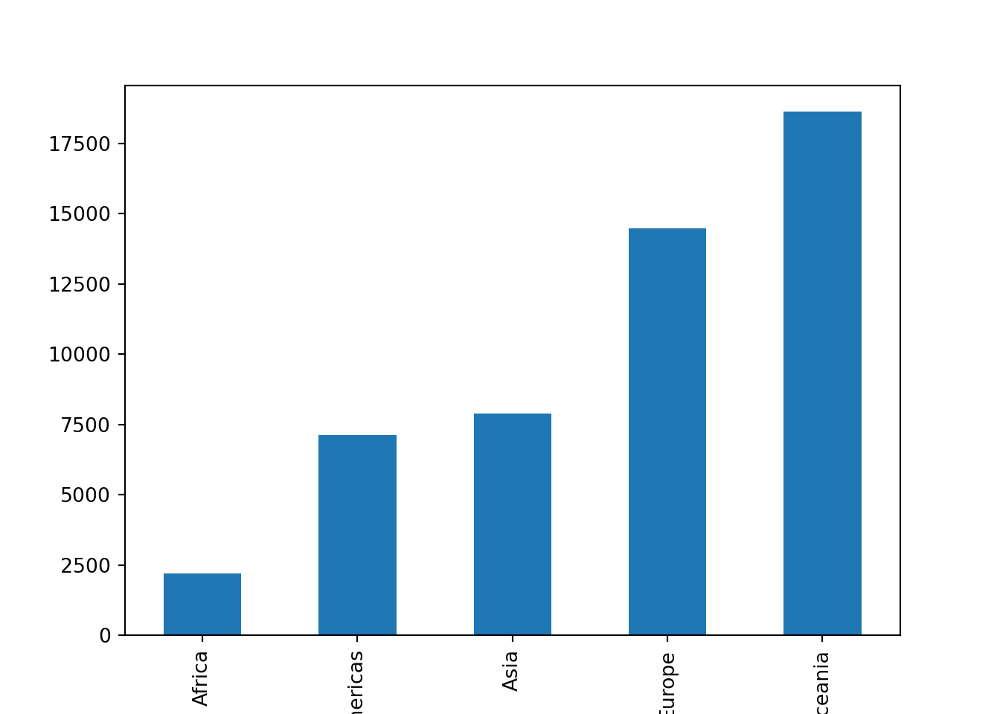

python3 -m pip install pandas
I have a confession to make: I am now a Python user. To be fair, I’ve used Python here and there over the years, but it was never my primary language (that has always been R). This year was the first time I had to actually sit down and really use Python for real projects. In fact, not only did I have to use Python, but I also had to teach Python. For those of you who teach, you’ll know that the best way to make sure you know something really well is to teach it. The end result is that I now consider myself a Python user. (But don’t worry, I’m still an R Lady at heart.)
Why did I decide to learn Python? I’ve been using R my whole data science life, and while I still think that R (with the tidyverse) is still the best language for data wrangling and data visualization, there is no denying that as a data scientist these days, Python is a required skill. If you’re doing machine learning, Python is still light-years ahead of R. If you’re working with software engineers, they’re going to be much happier working with you if you use Python. If you’re looking for a job, you’re going to be much more employable if you’re already comfortable with Python.
While there are certainly similarities between R and Python, don’t assume that knowing how to use one will automatically mean that you know how to use the other. That said, already knowing R does mean that the learning curve for learning Python won’t be too steep (but it will still take a few months of regular use to reach competence).
In this post, I’m going to introduce you to the world of data analysis with Python from an R perspective. Obviously this post won’t be exhaustive, but if you’re a tidyverse R user who is looking to learn Python, this post can hopefully serve as a helpful launching point and will provide some relatable context on your Python journey.
Note that this blog post will focus on working with data in Python using pandas. I won’t be talking too much about things like SciPy, arrays, or scikit-learn here.
Helpful resources
There are a lot of resources out there for learning Python. The one that I found most useful was Wes McKinney’s Python for Data Analysis book (Wes is the creator of pandas). There is a lot of information in there, and to be fair, you can skip a lot of it when you’re starting out (like the stuff about sets, tuples, and arrays). These are important things to know about to be a well-rounded Python programmer, but for just doing simple data analysis with pandas data frames, these needn’t be the focus.
Installing Python and VS Code
Managing Python installations on my computer used to give me a headache. While I used to use Python in Jupyter notebooks via the Jupyter notebook IDE installed using anaconda, I’ve found that the simplest approach to getting Python up and running is now to install the latest version of Python directly from the python website and install the Visual Studio Code IDE. Then you can select your preferred python installation within VS code and you’re good to go. (You might want to watch a couple of YouTube videos to get started with VS code if you’ve never seen it before. It definitely took me a minute to orient myself.)
Jupyter notebooks
While, these days, you can use Python together with quarto within RStudio, this isn’t really what Python users do (yet…). So if you want to fit in with the cool Python kids, I’d recommend working with Jupyter notebooks (.ipynb files) in the Visual Studio Code IDE. You can install a jupyter notebook extension within the VS Code IDE (fortunately, there is no need to install jupyter notebooks or anaconda separately).
Libraries
Like R, Python is mostly useful for data science because of the add-on libraries that some very smart people wrote to help us work with data. The main python libraries you’ll need to start with are NumPy and pandas.
Installing libraries
Like with R, you need to install a library before you can use it.
There are many ways to install python libraries, but if you installed python in the same way that I did above, the way that I usually install libraries is in the terminal on my computer, where I write:
which will install the pandas library, for example. You may have a different preferred way of installing python libraries. That’s fine. Your way is probably better than mine.
Loading libraries
One difference between R and Python is that once you have loaded a package into R, you can use the functions from the package (which is just another word for library) without having to specify which library the package comes from every time you use it like this:
library(dplyr)# I can use `filter()` from dplyr without having to specify that it comes from dplyr
filter(iris, Species == "virginica") Sepal.Length Sepal.Width Petal.Length Petal.Width Species
1 6.3 3.3 6.0 2.5 virginica
2 5.8 2.7 5.1 1.9 virginica
3 7.1 3.0 5.9 2.1 virginica
4 6.3 2.9 5.6 1.8 virginica
5 6.5 3.0 5.8 2.2 virginica
6 7.6 3.0 6.6 2.1 virginica
7 4.9 2.5 4.5 1.7 virginica
8 7.3 2.9 6.3 1.8 virginica
9 6.7 2.5 5.8 1.8 virginica
10 7.2 3.6 6.1 2.5 virginica
11 6.5 3.2 5.1 2.0 virginica
12 6.4 2.7 5.3 1.9 virginica
13 6.8 3.0 5.5 2.1 virginica
14 5.7 2.5 5.0 2.0 virginica
15 5.8 2.8 5.1 2.4 virginica
16 6.4 3.2 5.3 2.3 virginica
17 6.5 3.0 5.5 1.8 virginica
18 7.7 3.8 6.7 2.2 virginica
19 7.7 2.6 6.9 2.3 virginica
20 6.0 2.2 5.0 1.5 virginica
21 6.9 3.2 5.7 2.3 virginica
22 5.6 2.8 4.9 2.0 virginica
23 7.7 2.8 6.7 2.0 virginica
24 6.3 2.7 4.9 1.8 virginica
25 6.7 3.3 5.7 2.1 virginica
26 7.2 3.2 6.0 1.8 virginica
27 6.2 2.8 4.8 1.8 virginica
28 6.1 3.0 4.9 1.8 virginica
29 6.4 2.8 5.6 2.1 virginica
30 7.2 3.0 5.8 1.6 virginica
31 7.4 2.8 6.1 1.9 virginica
32 7.9 3.8 6.4 2.0 virginica
33 6.4 2.8 5.6 2.2 virginica
34 6.3 2.8 5.1 1.5 virginica
35 6.1 2.6 5.6 1.4 virginica
36 7.7 3.0 6.1 2.3 virginica
37 6.3 3.4 5.6 2.4 virginica
38 6.4 3.1 5.5 1.8 virginica
39 6.0 3.0 4.8 1.8 virginica
40 6.9 3.1 5.4 2.1 virginica
41 6.7 3.1 5.6 2.4 virginica
42 6.9 3.1 5.1 2.3 virginica
43 5.8 2.7 5.1 1.9 virginica
44 6.8 3.2 5.9 2.3 virginica
45 6.7 3.3 5.7 2.5 virginica
46 6.7 3.0 5.2 2.3 virginica
47 6.3 2.5 5.0 1.9 virginica
48 6.5 3.0 5.2 2.0 virginica
49 6.2 3.4 5.4 2.3 virginica
50 5.9 3.0 5.1 1.8 virginicaI could choose to explicitly specify that filter() comes from dplyr using :: like this:
# I can explicitly specify that `filter()` comes from dplyr using `::`
dplyr::filter(iris, Species == "virginica") Sepal.Length Sepal.Width Petal.Length Petal.Width Species
1 6.3 3.3 6.0 2.5 virginica
2 5.8 2.7 5.1 1.9 virginica
3 7.1 3.0 5.9 2.1 virginica
4 6.3 2.9 5.6 1.8 virginica
5 6.5 3.0 5.8 2.2 virginica
6 7.6 3.0 6.6 2.1 virginica
7 4.9 2.5 4.5 1.7 virginica
8 7.3 2.9 6.3 1.8 virginica
9 6.7 2.5 5.8 1.8 virginica
10 7.2 3.6 6.1 2.5 virginica
11 6.5 3.2 5.1 2.0 virginica
12 6.4 2.7 5.3 1.9 virginica
13 6.8 3.0 5.5 2.1 virginica
14 5.7 2.5 5.0 2.0 virginica
15 5.8 2.8 5.1 2.4 virginica
16 6.4 3.2 5.3 2.3 virginica
17 6.5 3.0 5.5 1.8 virginica
18 7.7 3.8 6.7 2.2 virginica
19 7.7 2.6 6.9 2.3 virginica
20 6.0 2.2 5.0 1.5 virginica
21 6.9 3.2 5.7 2.3 virginica
22 5.6 2.8 4.9 2.0 virginica
23 7.7 2.8 6.7 2.0 virginica
24 6.3 2.7 4.9 1.8 virginica
25 6.7 3.3 5.7 2.1 virginica
26 7.2 3.2 6.0 1.8 virginica
27 6.2 2.8 4.8 1.8 virginica
28 6.1 3.0 4.9 1.8 virginica
29 6.4 2.8 5.6 2.1 virginica
30 7.2 3.0 5.8 1.6 virginica
31 7.4 2.8 6.1 1.9 virginica
32 7.9 3.8 6.4 2.0 virginica
33 6.4 2.8 5.6 2.2 virginica
34 6.3 2.8 5.1 1.5 virginica
35 6.1 2.6 5.6 1.4 virginica
36 7.7 3.0 6.1 2.3 virginica
37 6.3 3.4 5.6 2.4 virginica
38 6.4 3.1 5.5 1.8 virginica
39 6.0 3.0 4.8 1.8 virginica
40 6.9 3.1 5.4 2.1 virginica
41 6.7 3.1 5.6 2.4 virginica
42 6.9 3.1 5.1 2.3 virginica
43 5.8 2.7 5.1 1.9 virginica
44 6.8 3.2 5.9 2.3 virginica
45 6.7 3.3 5.7 2.5 virginica
46 6.7 3.0 5.2 2.3 virginica
47 6.3 2.5 5.0 1.9 virginica
48 6.5 3.0 5.2 2.0 virginica
49 6.2 3.4 5.4 2.3 virginica
50 5.9 3.0 5.1 1.8 virginicaBut I don’t need to.
In Python, however, you do need to specify which library the functions you are using come from, even after importing them. This is why every time you import a python library, you should give it a nickname so you don’t have to type out the entire library name each time you want to use a function from it. Fortunately, there are some generally agreed-upon nicknames that everyone uses. E.g. pandas’ nickname is “pd”, and NumPy’s nickname is “np”.
import pandas as pd
import numpy as np
import matplotlib as pltSo to use a function from the NumPy library, such as log(), you need to first specify the package nickname and then the function name, separated by a dot: np.log(). The following code will compute the logarithm of 7 using the log() function from the NumPy library whose nickname is np:
np.log(7)1.9459101490553132That’s another thing about Python: common mathematical functions like log(), sqrt(), and exp() all need to be imported from the NumPy library (unlike in R, where “native” versions of these functions exist).
Pandas data frames
In R, the building block of data science is the data frame. In Python, the building block of data science is also the DataFrame (but they spell it as one word with camel case). While R contains a native data frame, python’s DataFrame comes from the “pandas” library (whose nickname is “pd”).
In R, we can create a toy data frame like this:
r_df <- data.frame(a = c(1, 2, 3, 4),
b = c(5, 6, 7, 8))
r_df a b
1 1 5
2 2 6
3 3 7
4 4 8And in Python, we can create a toy DataFrame like this:
pandas_df = pd.DataFrame({'a': [1,2,3,4],
'b': [5,6,7,8]})
pandas_df a b
0 1 5
1 2 6
2 3 7
3 4 8In the R version above we provided two arguments to the data.frame() function, each of which contained an R vector (c(1, 2, 3, 4) and c(5, 6, 7, 8)) of the values that will form a column. The syntax for the python version, however, involves a single argument corresponding to a type of object called a dictionary whose named entries each contain a python list ([1,2,3,4] and [5,6,7,8]) of the values that will form a column.
Lists in python
A list in python is actually a lot like a list in R, in that it can contain a variety of object types. Lists in python are created using square brackets:
my_py_list = [1,'a',[3,4]]
my_py_list[1, 'a', [3, 4]]Note that in general, python users tend to use fewer spaces than R users, assignment is always done with = (there is no <- operator in python), and there is a general preference for single quotes ' over double quotes " (though I might have imagined that one).
You can change the first entry of a python list similarly to how you would do it in R, except that python uses zero-indexing, which means that the first entry is in position 0, the second entry is in position 1, and so on:
my_py_list[0]1my_py_list[0] = "one"
my_py_list['one', 'a', [3, 4]]Dictionaries
A dictionary is kind of like a named list.
my_py_dict = {'name': ['Jane', 'Joe', 'Jerry'],
'age': [13, 15, 12]}
my_py_dict{'name': ['Jane', 'Joe', 'Jerry'], 'age': [13, 15, 12]}But while you cannot extract positional entries from it (my_py_dict[0] won’t work), you can extract named entries:
my_py_dict['name']['Jane', 'Joe', 'Jerry']I can extract the first (position 0) entry from the name dict entry of my_py_dict as you would expect:
my_py_dict['name'][0]'Jane'This is all super exciting, I’m sure, but I should probably point out that pretty much the only time I ever really use dictionaries is when I’m defining pandas DataFrames on the fly like I did above.
Column and row Indexing
While both the R and python/pandas data frame have column names, the way you extract them is different.
To extract the column names from the R data frame, we would use:
# print the R column names
colnames(r_df)[1] "a" "b"However, to extract the column names (or column index) from the pandas data frame, we use:
# print the pandas column names
pandas_df.columnsIndex(['a', 'b'], dtype='object')The output of which is an “index” type object.
There are two main uses of the syntax object.xyz. The first, which is being used here, is used to extract an “attribute” xyz from an object (e.g., here we are extracting the columns attribute from the pandas_df DataFrame object).
Another “attribute” that you can extract from a DataFrame is the shape:
pandas_df.shape(4, 2)The shape output here has a “tuple” type (we won’t go into tuples here).
Another important attribute of a DataFrame is its row index
pandas_df.indexRangeIndex(start=0, stop=4, step=1)This is a “RangeIndex” object that spans from 0 to 2 (not inclusive) with a step-size of 1 and corresponds to the row index of the DataFrame.
As we have seen, both the column and row indexes of pandas DataFrames are special index objects that can be converted to a python list using list().
list(pandas_df.index)[0, 1, 2, 3]list(pandas_df.columns)['a', 'b']Methods
Now only can you extract attributes of an object using the object.xyz dot syntax, but you can also apply object-specific functions to the object using the object.fun() dot syntax.
Note that functions that are applied using the object.fun() (syntax where the function name comes after the dot) are called methods. These are functions that are specific to the type of object it is being applied to.
For example, we can apply the mean() and sum() DataFrame methods to our pandas_df DataFrame object to compute the mean and sum of each column in the data frame:
pandas_df.mean()a 2.5
b 6.5
dtype: float64pandas_df.sum()a 10
b 26
dtype: int64Note that the output of these functions are “Series” type objects, which is like a single column of a data frame. More on Series’ below.
It is important to note that these mean() and sum() methods are not standalone functions. If we try to apply them to our DataFrame as we would do for regular functions, we get errors:
mean(pandas_df)name 'mean' is not definedsum(pandas_df)unsupported operand type(s) for +: 'int' and 'str'These mean() and sum() methods are functions specific to the DataFrame type object and must be applied using the pandas_df.mean() dot syntax.
Moreover, since these method functions are specific to DataFrame objects, they also won’t work on non-DataFrame objects, like lists:
py_list = [1, 3, 4]
py_list.mean()'list' object has no attribute 'mean'Note the error says 'list' object has no attribute 'mean'.
Coming from R where a function is always just a function, this method vs function thing was quite confusing at first (and honestly sometimes still is).
Extracting and adding columns
While you can create a pandas DataFrame using a dictionary containing list entries, the columns of a DataFrame themselves, when extracted, are a “Series” type object (rather than a list).
For example, the column 'a' can be extracted using []:
pandas_df['a']0 1
1 2
2 3
3 4
Name: a, dtype: int64which is the same as in R:
r_df["a"] a
1 1
2 2
3 3
4 4Note that the columns of a DataFrame are also “attributes” of the data frame and can be extracted using the df.col dot syntax:
pandas_df.a0 1
1 2
2 3
3 4
Name: a, dtype: int64The output above is the same as from the pandas_df['a'] syntax: both outputs are a pandas Series object.
We can check the type of an object in python using the type() function:
type(pandas_df['a'])<class 'pandas.core.series.Series'>which tells us that this column is a pandas “Series” object.
A pandas Series is like a one-dimensional DataFrame, and you can recognize that your object is a Series because there will be has two attributes printed out at the bottom: the Name (if indeed there is a name) and dtype (type).
pandas_df['a']0 1
1 2
2 3
3 4
Name: a, dtype: int64A series object has a row index but no columns:
pandas_df['a'].indexRangeIndex(start=0, stop=4, step=1)pandas_df['a'].columns'Series' object has no attribute 'columns'You can add a column to a pandas DataFrame just as you would in base R:
pandas_df['c'] = [9,10,11,12]
pandas_df a b c
0 1 5 9
1 2 6 10
2 3 7 11
3 4 8 12Don’t forget to .copy()
However, if you define a new DataFrame using an existing data frame and then modify it, e.g., by adding a new column:
# define a new data frame using the original one
pandas_df_new = pandas_df
# add a new column to the new data frame
pandas_df_new['d'] = [13,14,15,16]
# print out the new data frame
pandas_df_new a b c d
0 1 5 9 13
1 2 6 10 14
2 3 7 11 15
3 4 8 12 16Notice that the original DataFrame will also change:
pandas_df a b c d
0 1 5 9 13
1 2 6 10 14
2 3 7 11 15
3 4 8 12 16This is very different from what would happen in R, where the pandas_df_new object would be a separate object from the original pandas_df object, and making modifications to the new object would not be reflected in the original one.
This is because in python when you define a new object to be an existing object (pandas_df_new = pandas_df), you are actually creating a new “pointer” to the same underlying object being pointed to by the original name pandas_df. pandas_df_new becomes like an “alias” for pandas_df, rather than an entirely new object.
To avoid this issue, when defining a new DataFrame based on an existing DataFrame, you need to explicitly create a new object using the copy() method:
# redefine the original pandas DataFrame:
pandas_df = pd.DataFrame({'a': [1,2,3,4],
'b': [5,6,7,8]})
pandas_df a b
0 1 5
1 2 6
2 3 7
3 4 8# define pandas_df_new as a "copy" of pandas_df:
pandas_df_new = pandas_df.copy()
pandas_df_new['c'] = [9,10,11,12]
pandas_df_new a b c
0 1 5 9
1 2 6 10
2 3 7 11
3 4 8 12# check that pandas_df did not change this time
pandas_df a b
0 1 5
1 2 6
2 3 7
3 4 8This issue of unintentionally creating an alias or a “view” of an object, rather than a new object itself is another confusing thing about python. You will undoubtedly run into issues with it when you’re starting out (I certainly did).
Filtering
Pandas Series act like vectors in R in that you can ask logical questions of them (side-note: this does not work with python lists, but it does with with Pandas series):
# ask which entries in the column "a" are greater than 1
pandas_df['a'] > 10 False
1 True
2 True
3 True
Name: a, dtype: boolWhich is very similar to the R version:
# ask which entries in the column "a" are greater than 1
r_df["a"] > 1 a
[1,] FALSE
[2,] TRUE
[3,] TRUE
[4,] TRUEIn base R, we can use this to “filter” our data frame to the rows where the condition above is true (the first row):
r_df[r_df["a"] > 1, ] a b
2 2 6
3 3 7
4 4 8This syntax doesn’t work for the pandas DataFrame, however, but if we make a few syntax modifications where we:
employ the
.locmethod andprovide
:to the column dimension (which says to “return all of the columns”),
then we get the same result:
pandas_df.loc[pandas_df.a > 1,:] a b
1 2 6
2 3 7
3 4 8Note that loc isn’t a normal function per se in that it is not followed by round parentheses (), but it is followed by the square indexing parentheses [].
If we wanted to just return the second column, we would provide the second column’s name ('b') into the second dimension of the .loc[,] square parentheses.
pandas_df.loc[pandas_df.a > 1,'b']1 6
2 7
3 8
Name: b, dtype: int64However, loc expects either a Boolean series or a name in its index. The iloc method, on the other hand, takes integer index positions. The following code will extract the second, third, and fourth rows of the second column (remember zero-indexing!).
pandas_df.iloc[[1,2,3],1]1 6
2 7
3 8
Name: b, dtype: int64Again, the output is a pandas Series (as is almost always the case when the output of your code involves a single column).
It’s a bit annoying that you can’t use the same syntax to do both named (.loc) and integer (.iloc) indexing for pandas DataFrames, but such is life.
The query() method
Since this type of square bracket syntax for indexing feels clunky both in R and Python, you can alternatively use the query() method of a pandas DataFrame similar to the filter() dplyr function in the tidyverse.
Recall that with the pipe, the filter() syntax in R looks like:
r_df |> filter(a > 1) a b
1 2 6
2 3 7
3 4 8For pandas DataFrame, the query() syntax looks like
pandas_df.query('a > 1') a b
1 2 6
2 3 7
3 4 8Note that there is no “tidy eval” in python, so you need to provide a quoted character argument to the query() method.
If you want to use an external variable, you need to access it using @ within the query argument:
thresh = 1
pandas_df.query('a > @thresh') a b
1 2 6
2 3 7
3 4 8Grouping data frames
One of the most powerful parts of the tidyverse is the ability to perform grouped operations on data frames. For example, if we wanted to add a categorical column to our data frame:
# add a new categorical column to r_df
r_df["cat"] = c("red", "red", "yellow", "yellow")
r_df a b cat
1 1 5 red
2 2 6 red
3 3 7 yellow
4 4 8 yellowThen we could group by this new cat column and compute the mean of the values in column a in R as follows:
r_df |> group_by(cat) |> summarize(mean_a = mean(a))# A tibble: 2 × 2
cat mean_a
<chr> <dbl>
1 red 1.5
2 yellow 3.5We can do something very similar in Python with pandas DataFrames using the groupby() method. First, let’s add a column of color categories to our pandas DataFrame:
# add a new categorical column to pandas_df
pandas_df["cat"] = ["red","red","yellow","yellow"]
pandas_df a b cat
0 1 5 red
1 2 6 red
2 3 7 yellow
3 4 8 yellowand then let’s group the data frame by the new categorical column, extract the column “a”, and then apply the mean method to the grouped column:
pandas_df.groupby('cat')["a"].mean()cat
red 1.5
yellow 3.5
Name: a, dtype: float64The output is a Series object with the grouping variable values as the row index.
Note that if we didn’t extract the column “a”, we would be applying grouped mean to all columns:
pandas_df.groupby('cat').mean() a b
cat
red 1.5 5.5
yellow 3.5 7.5The output is now a DataFrame with the grouping variable values as the row index.
Chaining functions together
Note that python methods can be chained together using the . similarly to how we chain methods together in R using the pipe |>.
For instance, if we wanted to filter to rows where a was greater than 1, then group by the ‘cat’ column, and then compute the mean of the column b, we would do this in R as follows:
r_df |> filter(a > 1) |> group_by(cat) |> summarize(mean_b = mean(b))# A tibble: 2 × 2
cat mean_b
<chr> <dbl>
1 red 6
2 yellow 7.5In python, we do a similar thing, but using . instead of |>:
pandas_df.query('a > 1').groupby('cat')['b'].mean()cat
red 6.0
yellow 7.5
Name: b, dtype: float64Note that the code up to the mean() part results in a “grouped Series”. Unlike in R, many objects in python don’t always display nicely when called:
pandas_df.query('a > 1').groupby('cat')['b']<pandas.core.groupby.generic.SeriesGroupBy object at 0x1566c4940>We can use the pd.Series() function to force the grouped Series object back into a regular ungrouped Series (pd.Series() is used to define Series objects on the fly just as pd.DataFrame() is used to define DataFrames on the fly – this is what I used at the beginning of this tutorial).
Let’s try to force the grouped Series object back into a regular pandas Series object:
pd.Series(pandas_df.query('a > 1').groupby('cat')['b'])0 (red, [6])
1 (yellow, [7, 8])
dtype: objectData visualization
Unlike in R, where ggplot is the clear “best” way to create data visualizations (at least in my opinion), in python there are many different libraries for doing data visualization. The two you are most likely to have heard of include matplotlib and seaborn.
Seaborn is a little prettier than matplotlib, but all I’m going to show in this tutorial is the inbuilt data visualization methods for pandas Series and DataFrame objects that are built on matplotlib.
To do some more interesting visualizations, let’s load the gapminder dataset (from a URL) into a pandas DataFrame using the pd.read_csv() pandas function. This pd.read_csv() function can also be used to load a local .csv file.
gapminder = pd.read_csv("https://raw.githubusercontent.com/rlbarter/gapminder-data/main/gapminder.csv")Let’s use the head() DataFrame method to look at the first 6 rows:
gapminder.head() country continent year lifeExp pop gdpPercap
0 Afghanistan Asia 1952 28.801 8425333 779.445314
1 Afghanistan Asia 1957 30.332 9240934 820.853030
2 Afghanistan Asia 1962 31.997 10267083 853.100710
3 Afghanistan Asia 1967 34.020 11537966 836.197138
4 Afghanistan Asia 1972 36.088 13079460 739.981106Let’s practice some of our new python skills. The following code will filter to the data for Australia and compute the mean life expectancy:
gapminder.query('country == "Australia"')['lifeExp'].mean()74.66291666666667And the following will compute the average gdpPercap by continent:
gdp_by_continent = gapminder.groupby('continent')['gdpPercap'].mean()
gdp_by_continentcontinent
Africa 2193.754578
Americas 7136.110356
Asia 7902.150428
Europe 14469.475533
Oceania 18621.609223
Name: gdpPercap, dtype: float64Notice that the output of this last piece of code is a Series object. Notice also that the (row) index is the continent:
gdp_by_continent.indexIndex(['Africa', 'Americas', 'Asia', 'Europe', 'Oceania'], dtype='object', name='continent')What will happen if we apply the plot() method to this Series object?
gdp_by_continent.plot()
By default a line plot is created and the row index is used as the x-axis labels by default. The DataFrame’s plot() method here acts as a wrapper for the matplotlib library’s plotting function.
If I wanted a bar chart instead of a line plot, I could create one using the plot.bar() method (instead of just the plot() method):
gdp_by_continent.plot.bar()
Again, the row index of the Series object is used as the x-axis labels by default.
We could similarly create a scatterplot of the gdpPercap and lifeExp columns from gapminder using the plot.scatter() method:
gapminder.plot.scatter(x='gdpPercap', y='lifeExp')
While these built-in pandas plots are fine, I personally prefer the look of the seaborn library and the workflow of the plotly express library, neither of which I’ve covered in this post (and neither of which are as good as ggplot2 in my opinion). I recommend you look into both of these libraries (and more!) to figure out the data visualization workflow you prefer!
Wrapping up
Obviously, there’s a lot more to learn about Python, but I’ll leave it here for now. I hope this post has helped some of you R users get started on your Python journey!